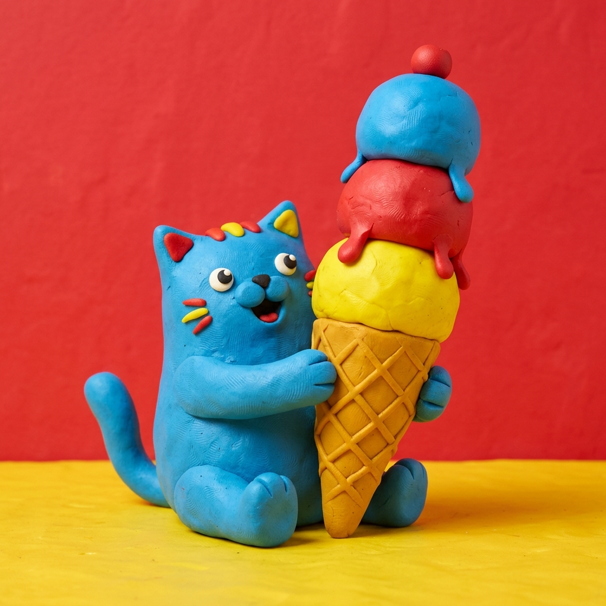
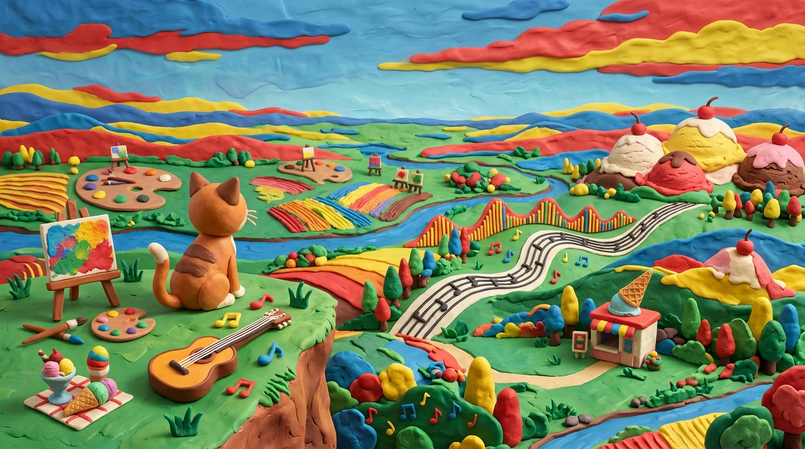
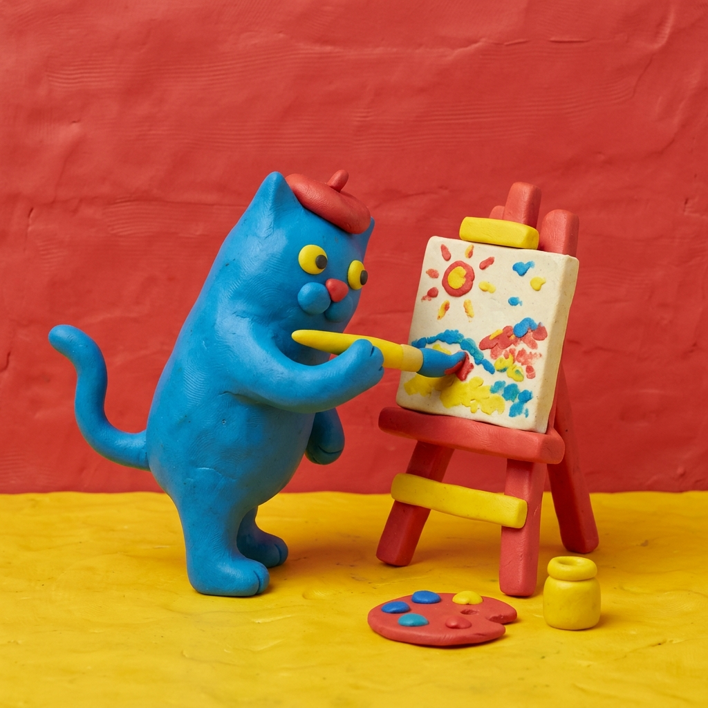
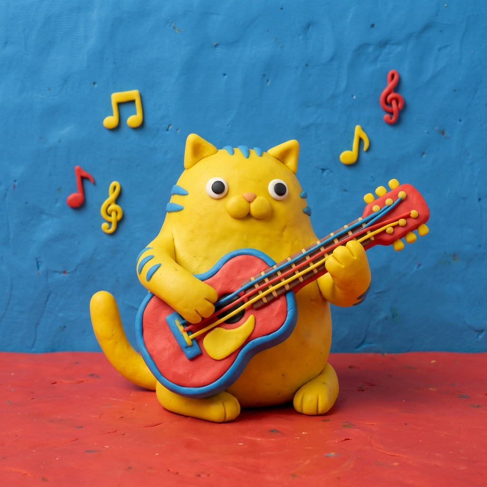
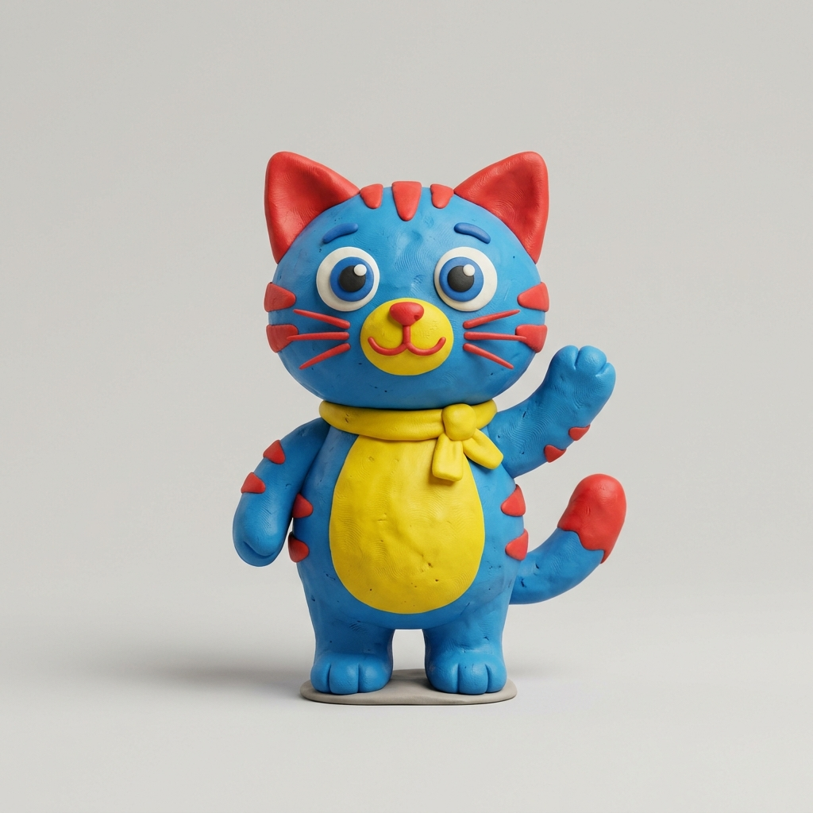

Ice Cream
Ordering two scoops gives me an excuse to try something new. Pistachio is my usual pick, and strawberry gets the second spot when I want something bright and fruity.
A scoop of ice cream, a splash of paint, and a song on repeat. These are three of my favorite ways to spend an afternoon.
Explore my interests

Ordering two scoops gives me an excuse to try something new. Pistachio is my usual pick, and strawberry gets the second spot when I want something bright and fruity.

I like painting ordinary things, like a mug on my desk or the view from a window. I pick three colors and see how many different shades I can mix from them.

Some songs are made for walking home with headphones on. Others are for singing in the kitchen. My favorite playlists have a little room for both.

Pip is the little clay cat who lives on this page. On a good day, you’ll find Pip with a paintbrush in one paw and an ice cream cone in the other.